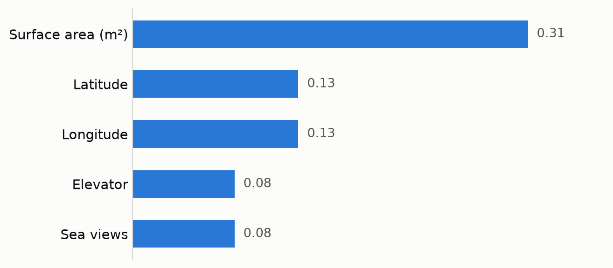

How this blog runs your code and still builds in CI
Quarto
uv
CI/CD
Reproducibility
Quarto for executable posts, uv for the environment, and frozen output so the build server never needs either.
Published
September 22, 2026
Most static site generators treat code as text to display. I wanted the opposite: posts where the chart is produced by the code shown next to it, so a figure cannot quietly drift away from the analysis that made it.
Quarto does that. A .qmd file is Markdown plus executable blocks, and a rendered page is the result of running them. Jupyter notebooks work too, with no conversion step.
The problem that setup creates
If posts execute Python, the build server needs Python. And not just Python — the same versions of the same libraries, and sometimes the data, or the build fails on a machine that is not mine. That is a brittle dependency to hang a personal site on.
The fix is one line of configuration:
execute:freeze: auto
With freeze, Quarto executes code locally and stores the results in _freeze/, which is committed to the repository. Continuous integration then renders the site from those stored results. It installs Quarto and nothing else — no Python, no libraries, no data. Code is re-executed only when I change the document that contains it.
So the environment lives in exactly one place: my machine, pinned with uv.
The figure below is not an image file. It is drawn when this page is rendered, from the SHAP importances of my Alicante housing market analysis — the five features that move property prices the most in that dataset.
import matplotlib.pyplot as pltfeatures = ["Sea views", "Elevator", "Longitude", "Latitude", "Surface area (m²)"]importance = [0.08, 0.08, 0.13, 0.13, 0.31]SURFACE, SERIES, INK, MUTED ="#fcfcfb", "#2a78d6", "#0b0b0b", "#52514e"fig, ax = plt.subplots(figsize=(7, 3.1), facecolor=SURFACE)ax.set_facecolor(SURFACE)bars = ax.barh(features, importance, height=0.55, color=SERIES)# Direct labels replace the x-axis: five bars do not need a scale.for bar, value inzip(bars, importance): ax.text(value +0.007, bar.get_y() + bar.get_height() /2, f"{value:.2f}", va="center", ha="left", color=MUTED, fontsize=10)ax.set_xlim(0, 0.37)ax.set_xticks([])ax.tick_params(axis="y", length=0, colors=INK, labelsize=11)for side in ("top", "right", "bottom"): ax.spines[side].set_visible(False)ax.spines["left"].set_color("#d8d8d4")plt.tight_layout()plt.show()

Figure 1: SHAP importance of the five strongest price drivers in the Alicante housing dataset (1,802 listings).
Surface area dominates, but latitude and longitude together carry just as much weight — in Alicante, location is not a tiebreaker between similar flats, it is a primary driver of price.
What the pipeline looks like end to end
Write a post, run quarto preview, see it execute locally.
Commit the post and_freeze/.
GitHub Actions installs Quarto, renders, and publishes to GitHub Pages.
The build is fast because nothing is computed twice, and it is reproducible because what CI publishes is exactly what I saw locally.